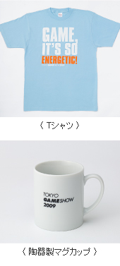

2009年9月3日
報道関係資料
東京ゲームショウ主催者企画が決定
「ゲーム科学博物館」をテーマ別に3カ所で展開
公式オリジナルグッズ、13アイテムを販売
昨年に引き続きグリーン電力を導入、地球温暖化防止に協力
社団法人コンピュータエンターテインメント協会
日経BP社
社団法人コンピュータエンターテインメント協会（略称：CESA、会長：和田洋一、所在地：東京都港区西新橋）主催、日経BP社（社長：平田保雄、所在地：東京都港区白金）が共催する「東京ゲームショウ2009」［会期：2009年9月24日（木）～27日（日）、会場：幕張メッセ（千葉市美浜区）］の主催者企画などの詳細が決まりました。
本年は、ゲームの技術やヒストリー、トレンドなど紹介する主催者企画「ゲーム科学博物館」を、2ホール、4ホール、8ホール（キッズコーナー）の3カ所に設置いたします。2ホールでは最近の戦国武将人気を背景に、戦国武将関連ゲームをはじめ、人気の武将9人の甲冑などを展示し、そのトレンドについて分析・解説します。4ホールでは最新ゲーム機の構造を分かりやすく展示するほか、ゲームに使われる最先端技術を紹介いたします。キッズコーナーでは、ゲームキャラクターのグラフィックの変遷を子どもたちにも理解できる形で取り上げます。
一方、昨年ご好評をいただいたTGS公式グッズも、今年はさらに充実いたします。4日間限定で発売するオフィシャルグッズは全13アイテムで、特別にデザインしたオリジナル商品ばかりです。会場内物販コーナーほかで販売いたします。
また、東京ゲームショウ2009では、地球環境への貢献のため、昨年に引き続きグリーン電力を導入することも決定いたしました。
東京ゲームショウ2009の共有部分で消費される電力量28万kWhのすべては、バイオマス発電によるグリーン電力でまかなわれます。このグリーン電力によるCO2の排出削減効果は約119トンに相当し、面積約14.1haの杉の人工林（40年生）が1年間に吸収する量と同等です。
（電力のCO2排出係数は2007年度の東京電力の0.425kg-CO2/kWhを採用）
■ゲーム科学博物館
2ホール展示（協力：カプコン、コーエー、長野県上田市、宮城県白石市ほか）
2ホールのゲーム科学博物館では、最近の戦国武将人気を背景にゲームと武将たちの関係を探ります。武将人気のきっかけを作った『戦国BASARA』シリーズや、『戦国無双』シリーズなどの戦国武将関連ゲームの試遊コーナーを設置するほか、シリーズの人気のポイントを解説、展示します。
さらに、上杉謙信や直江兼続をはじめ、織田信長、伊達正宗といった9人の人気武将の甲冑などを展示します。その中でも真田幸村の展示企画については長野県上田市に、片倉小十郎については宮城県白石市に、それぞれご協力いただきました。両雄の特設コーナーを設け、甲冑並びにゆかりの品、特製グッズの展示を行います。
4ホール展示（協力：日経エレクトロニクスほか）
4ホールのゲーム科学博物館は、日経BP社の専門雑誌編集部による企画・協力の「ゲームを科学する」コーナーです。最先端の家庭用ゲーム機がどのような技術で構成されているのかを分かりやすく解説します。
（A）家庭用ゲーム機の不思議
最先端の家庭用ゲーム機に関する不思議を解説します。プレイステーション3の最新機種をはじめ、Xbox 360最新型などの仕組みを勉強することで、最新ゲームハードが持つ能力の高さや技術力について理解を深めます。
（B）コントローラーの内部センサーの謎
家庭用ゲーム機で、特に劇的に変化し続けている部分がコントローラーです。最新コントローラーの中には通常の十字キーや各種ボタン以外に、「加速度センサー」「ジャイロセンサー」が組み込まれています。その仕組みについて、新型のコントローラーを使って解説します。
8ホール展示（協力：日経キッズプラス）
キッズコーナーには、日経キッズプラス編集部監修で、ゲームキャラクターのグラフィックの変遷について勉強できるコーナーを設置します。また、子供たちを対象に「ドット絵」コンテストも開催。専用用紙に描いたオリジナルゲームキャラクター（ドット絵）を応募すると、日経キッズプラスの誌面にて、優秀賞を発表します。優秀賞受賞者には、ドット絵を使ったオリジナルグッズをプレゼントします。
■公式グッズ販売
東京ゲームショウ2009のためだけに企画デザインした
会場限定販売公式グッズです。
Tシャツ、ワンショルダーバッグ、マグカップなど全13アイテム。
今年はおみやげにぴったりのカステラ饅頭もご用意いたしました。
会場内物販コーナーほかで販売を予定しています。
＜アイテム＞（※価格は、消費税込）
| ・Tシャツ(4種類) | ￥2,500 |
| ・ロゴ入り多機能ペン | ￥ 800 |
| ・単色ボールペン | ￥ 500 |
| ・トートバッグ | ￥1,500 |
| ・陶器製マグカップ（2種類） | ￥1,600 |
| ・スポーツタオル（2種類） | ￥2,500 |
| ・ワンショルダーバッグ | ￥2,800 |
| ・カステラ饅頭 | ￥1,000 |
※アイテムおよび価格は変更の可能性があります。
「東京ゲームショウ2009」開催概要
| 名称 | 東京ゲームショウ2009（TOKYO GAME SHOW 2009） |
|---|---|
| 主催 | 社団法人コンピュータエンターテインメント協会（CESA） |
| 共催 | 日経BP社 |
| 後援 | 経済産業省 |
| 会期 | 2009年9月24日（木） ビジネスデイ 10:00～17:00 2009年9月25日（金） ビジネスデイ 10:00～17:00 2009年9月26日（土） 一般公開日 10:00～17:00 2009年9月27日（日） 一般公開日 10:00～17:00 |
| 会場 | 幕張メッセ（千葉県千葉市美浜区） |
| 入場料 | 一般（中学生以上）・・・前売り 1,000円（税込） ／ 当日 1,200円（税込） 小学生以下・・・無料 |
| 問い合わせ | ［一般］日経BP社 （※ご回答は平日のみとなります） URL: http://tgs.cesa.or.jp/contact/ 東京ゲームショウFAQ：http://tgs.cesa.or.jp/ ［報道関係］東京ゲームショウ事務局 報道担当 住所：〒104-0033 東京都中央区新川1-28-4～1403 電話：03-5541-6810 FAX：03-3551-4123 E-mail:tgs2009-press@publicity-bur.co.jp |